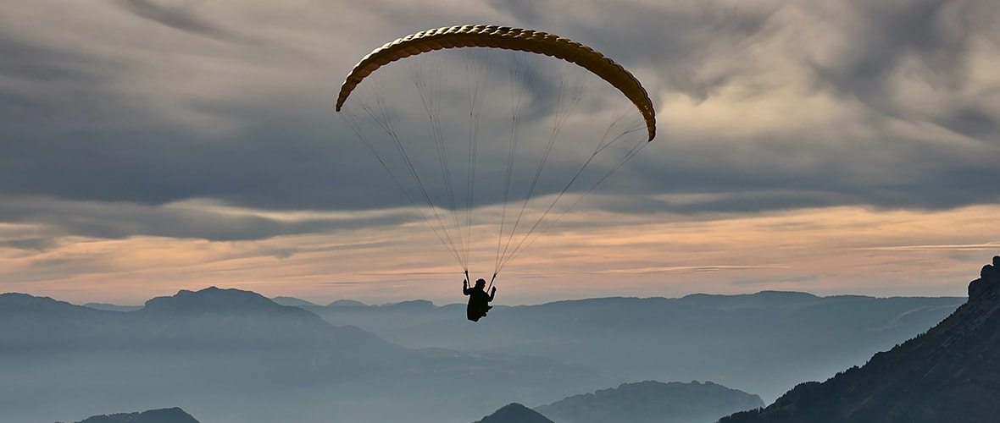

Welcome In Abha Activty.
discover the rich wildlife of the national park

if you're a wildlife lover and discover its diversity, assir national park - the kingdom's first national park - is definitely your next perfect destination. from baboons to amazing birds. this park contains more than 300 species of wild animals and birds. if you're lucky, you might be able to see the endangered arab cheetah. spanning 1,600 square kilometres, the park features 67 camping sites and 45 picnic sites. you can also learn more about wildlife and untamed animals by walking on trails and watching mountain ranges and picturesque green valleys.
a cable car experience that offers you very panoramic views:

her father hides in her arms many hidden treasures that reflect the splendor of nature in every corner of this region. the cable car tour is the best way to enjoy the beauty of nature, vast spaces and exceptional diversity. take a cable car tour of habla, the hanging village, which is about an hour from abha. the green mountain was once a military centre and is now a tourist destination where you can also see its splendor from the cable car. enjoy the perfect views from this panoramic point, a short drive from abha.
a fun adrenaline shot with paragliding.:
abha's misty mountains are crowned with natural paintings painted to reflect creativity in every detail, and are certainly worth watching and meditating on. perhaps the practice of paragliding is the perfect way to test this experience, and how if it is from mount black, the highest peak of saudi arabia?! this experience lets you fly through the clouds and see the picturesque spaces, discovering nature's creations in its most beautiful solution. discover the rich wildlife of the national park if you're a wildlife lover and discover its diversity, assir national park - the kingdom's first national park - is definitely your next perfect destination. from baboons to amazing birds. this park contains more than 300 species of wild animals and birds. if you're lucky, you might be able to see the endangered arab cheetah. spanning 1,600 square kilometres, the park features 67 camping sites and 45 picnic sites. you can also learn more about wildlife and untamed animals by walking on trails and watching mountain ranges and picturesque green valleys.
get ready for a historic tour of time.:
abha is not only a destination for nature lovers, but also a destination for history and civilization enthusiasts. if you want to travel through the ancient past, just visit the ottoman bridge, one of the oldest bridges in the kingdom. built during ottoman rule, once visited, this famous steel bridge will feel the tales of the past that reflect that era as if they were displayed in front of you. basta is one of the oldest villages in abha, and one of the main evidence of the history of the region and the traditions of its people, thus adding even more astonishment to your experience! discover this heritage village with several castles that take you back to ancient times. for an experience that combines the splendor of nature with the richness of history, don't miss out on the province of the brightest men. this province is full of civilization and is about an hour from abha, and now attracts nature lovers from the kingdom and beyond with its picturesque hills. in short, this area will ensure special times during your visit to historic monuments built of natural stone, clay and wood.
discover her father's artistic face!:
get ready for a historic tour of time.: